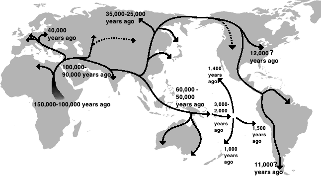

सिग्देल वंशावली

ऋषि परम्परा ः आत्रेय गोत्र
ऋग्वेदको मण्डल ५ सुक्त ६१ म वर्णित अत्रि ऋषि आत्रेय अर्चनानस तथा श्वावाश्व प्रवर रुपमा रहेका आत्रेय गोत्रका लेख्य रुपका अदिम स्रोत ‘अत्रि’ को उल्लेख पाइन्छ । उक्त ऋचाको रचना हुनु पुर्व नै ‘‘अत्रि’ भन्ने आर्ष पुरुषको जीवन गाथाको इतिवृत्त अस्तित्वमा आइसकेको स्पस्टै छ । तत्कालीन भाषिक परम्परा तथा पुराण आदिका वर्णित ‘‘आत्रैय” शब्द अत्रि शब्दकै व्युपन्न रुप हो । ‘‘अत्रे ः अपत्यं पुमान” यस्तो शाब्दिक विग्रह हुँदा ऋषि ‘‘अत्रि” का पुरुष सन्तान परम्परा भन्ने अर्थ जाहेर हुन्छ । सप्तर्षि मध्येका ऋषि अत्रिलाई तत्कालीन एउटा स्रोतले अपैरष्ेय ब्रम्माजीबाट उत्पन्न भन्ने हाम्रा पुर्वीय धर्मशास्त्रहरुले बताएको छ ।अपौरुषय ब्रह्माजी अनि उनका अत्रि लगाएतका पौरुषेय शाखा सन्तान्हरुको रौचिरा छिनो फानो पुवीृय दर्शनहरु मर्फत् हाम्रा दिग्गज विद्धान्हरुले आ–आफ्ना बौधिक बुता र तर्क वितर्कहरु छुट्टै अलग श्रृंखला नै कायम गरेका छन् । यतातिर रुमलिनु भन्दा यहाँ हाम्रो प्रतिापद्य विषय चाहि ऋषि अत्रि अनि उनका आत्रेयका सन्तान भनेर कहलिएका आत्रेय गोत्री ‘...सिग्देल’ थरका शाखा सन्तानको प्राप्त पुख्र्यौलीलाई वर्तमान सन्तान तन्तूसम्म आइपुग्ने सानो जमर्को गरिएको छ । पौराणिक आख्यान , जनश्रुति तथा किंबदन्तीहरुलाई ठाउँठाउँमा छुनुसम्म परेपनि भरसक ऐतिहासिक तथ्यहरुलाई आधार बनाएर इतिहास लेिखन धर्मलाई अनुसरण गर्ने प्रयास गरिएको छ ।
गोत्र परम्परा
गोत्र परम्पराका स्रोतको रुपमा रहेका कश्यप, भरद्धाज , अत्रि , आत्रेय , गर्ग , अङ्गिरस आदि २२१ र कुमाई ब्राह्महरुका थप २१२ गरी ४३ ऋषिहरु उल्लेख छन् । यी मध्ये पनि तत्कालीन एक शास्त्रले ब्रह्माजीका थपक्कै छोराको रुपमा मानिएका अत्रि , अंगिरा , भृग , वशिष्ठ आदि सप्तर्षि मध्यको अत्रि ऋषि प्रमुख मानिएका छन् । जहाँसम्म गोत्र परम्पराको प्रश्न छ ‘‘गोत्र” शब्दलाई निरुपण गर्दा तत्कालीन समृद्ध संस्कृत भाषा अनुसार ‘‘गा त्रायते” (गाई वा भुमिको रक्षा गर्ने) अर्थात व्यवह्त् भएको देखिन्छ । संस्कृत भाषाका कोशकार अमर सिंहले ‘‘गोत्रा” भनेर पृथ्वीलाई बुझाउने शब्दको रुपमा लिनु भएको छ । त्यसकारण गोत्र भन्नाले पृथ्वीको कुनै खण्डमा आधिपत्य जमाउने अर्थात् धर्तीको कुनै अंशमा शासनगर्ने भन्ने समेत अर्थ उद्भाषित गर्दछ । जमीनको कुनै सेरोफरोमा आफ्नो प्रभुत्व जमाउने आर्ष परम्परा नै गोत्रको मुल जरो भन्ने लाग्दछ ।
गोत्रको स्रोतको रुपमा रहेका ऋषिहरुलाई विद्वान्हरुले.....यायावर र ..... शालीय गरी दुई वर्गमा बाडेकाछन् । ऋषिहरु यायवर(घमन्ते) हून चाहे शालीय (एकै ठाउँमा बसोबास गर्ने ) हुन् दुबै खाले ऋषिहरुको त्यस अवस्थामा आ–आफ्ना समुहमा प्रतिष्ठापुर्ण जीवन थियो । यायावर रुपमा रहेका ऋषि आत्रेय चाहिं जाहाँ जाहाँ जान्थे त्यहाँ त्यहाँ उनको इज्जत एवं सम्मान हून्थ्यो । ऋषि आत्रेय ऋग्वेदका कतिष्य मन्त्रका द्रष्टा थिए । श्रुति परम्पराको रुपमा कैयौइं कालखण्डमा उल्लेििखत रुपमा जीवन्त रहन असामान्य व्यक्तित्व तथा दिगन्त प्रतिभा हुनुपर्दछ । ऋषि आत्रेय समेत ज्ञाता थिए भन्ने कुरा तत्कालीन आख्यान्हरुले बखानेका छन् । पिता अत्रिले पुरा गर्न बाकी रहेका आयुर्वे तन्त्रका पुर्ति समेत यिनले गरेका थिए भनिएको छ ।
आत्रेय गोत्रको क्रम
आत्रेय ऋषि आत्रिका पुत्र सन्तान भनेर भनिसकियो । ऋषि अत्रिचाहिं स्वयं ब्रह्माजीका मानस पुत्रको रुपमा रहेको कुरा हाम्रा पर्वीेय धर्मशास्त्रहरुले बताएका छन् । अनि बम्ह्माचाहिं शेषशायी भगवान् नारायणको नाभिकमलमा विरनजमान थिए । अनि नारायण भगवान् बृहत् जलपिण्हमा शेष नागको सृष्टि गरेर यसैको शैयामा मस्त आराम गरेका थिए भनेर सृष्टिको क्रमलाई जलपिण्ड, ओकार हुदै शुन्यमा लगेर टुंग्याइएको छ । अत्रि अनि आत्रेय आदि ऋषिहरुको जुन कालखण्डमा प्रादुर्भाव भयो त्यसभन्दा अघिको कालखण्डलाई छोटकरीमा जलपिण्ड एवं शुन्यमा लगेर टुंगयाइए पनि अनन्त संख्या, लय र प्रलयहरुकोे भने आंकलन गरिएको छ । यो ब्रह्माण्डीय रचना कयौपल्ट शरु भएको अनि कयौ सत्य , कयौ द्वापर र कलिको पनि २८ सौं युगमा वैवश्यत मन्वन्तरको पालो भनेर हाम्रा पुर्वीय ज्याृतिषविज्ञान् वे्रत्ताहरुले आजको संसार सृष्टि १९५५८८१०२२ वर्ष र कलियुग वितेको पनि ५१०३ वर्ष भएको स्वीकारेका छन् ।ऋषि अत्रि , आत्रेयको वंश बखान गर्दा उपर्युक्त स्रोत प्रवाहलाई पटक्कै उपेक्षा गर्न मिल्दैन । तर ऋषिअत्रिलाई नृवंशशास्त्र अन्तर्गत एउटा समृद्ध जविनशैली उपभोग गर्ने अवस्थासम्म आइपुगेको मानव इतिहासले कति लय , प्रलयका धारहरुमा खारिदै , ठेलिदै, पेलिदै साहित्य रचना हुने अवस्थासम्मको अति समृद्ध जीवनशैली यापन गर्ने अत्रि वा आत्रेय पुर्वीय शस्त्रहरुले बताए झैं कतियौं अत्रि , आत्रेय हुन् त ? किन भनै हाम्रा शास्त्रहरले िअनेकौ सत्ययुग धेरै द्धापर कलिलाई जति पल्ट परिभ्रमण गराएर पनि शुन्य आकार शेषशायी अनि ब्रम्हाजीलाई फन्को धुमाए पनि वैंवश्वत मन्वन्तरको अठ्ठाइसौं कलियुगमा प्राप्त स्रोत अनुसारका ऋषि अत्रि र आत्रेयका शाखा सन्तान यहाँ अठ्ठाइसौं कलिको यो पंक्तिकारले िवंश तन्तुको दिग्दर्शन गराउन चाहन्छ ।
ऋषि अत्रि र पौराणिक किंबदन्ती
ऋषि अत्रि ज्यातिष शास्त्रका प्रणेताहरु मध्यको एक प्रमुख मानिन्छ । पुर्वीय ज्यातिष शास्त्र प्रण्ोताहरु अठार जना भध्ये ग्रह–गतिहरुको गणनागरी त्यसको प्रतिफलसम्म बताउन सक्ने ऋषि अत्रि थिए भनिन्छ । उनीले ऋग्वेदका कतिपय मन्त्रहरुको रचना गरेका थिए भनिन्छ ।
- ऋत्रिका सन्तानको बारेमा एक पौराणीक रोचक आख्यान समेत पाइन्छ ः
ऋषि अत्रि र उनकी पत्नी अनूसुया(प्रजापतिकी छोरी) का लामो समयसम्म सन्तान भएनन । दुवै ऋषिदम्पती भने भगवान् जस्तै वैभवशाली सन्तान जन्माउन चाहन्थे । तीनै देवता (ब्रम्हा , बिष्णु , महेश ) लाई ऋषि दाम्पतीको मनोकांक्षा थाहा थियो तर त्यस्ता भगवत्अंशलाइ प्रार्दुभाव गराउन सक्ने समथ्र्यमा अनूसुयाको पातिव्रत धर्र्ममा भने तीनै जनालाई शंका लाग्यो । साधुको भेषमा ऋषिपत्नीको परीक्षलिन खोज्दा क्रमैले तीनै देवताहरुले हार र्खार तीनै देवताको एकमुष्ट प्रभाव र सामथ्र्य भएको सन्तानको रुपमा पुत्ररत्न दिने कबुल वमोजिम दिइएको छोरा नै दत्त आत्रेय वा दत्तत्रेय यिनै आत्रेय ऋषि हुन भनेर कति विद्धान्हरुले बताएका छन् ।
- आत्रेयका तीन प्रवर( आत्रेय अर्चनानम श्वावाश्व )
प्रवर शब्दार्थले नै त्यस कुल परम्परामा वर्चश्व राख्न सक्ने कुल दीपक(श्रेष्ठ) भन्ने जनाउँछ । यस आत्रेयवंश परम्पराको शुरु बिन्दुतिर उल्लेख गर्न लायक प्रतिष्ठित कुल नायकहरुको एउटा शृंखला नै रह्यो । तिनै लब्धप्रतिष्ठित कुलस्तम्भहरुलाई कुलदपिकहरु इस परम्परामा उल्लेख रहे । यिनै तीन कुलश्रेष्ठलाई आज हामी प्रवर रुपमा स्मरण गर्दछौं , सम्मान गर्र्दछौं । अद्यापि आफ्नो पुरा परिचयमा तीनपुस्ते लेख्ने चलन छ ।
वैदिक कालीन कुल परम्परा
जुन कालखण्डमा अत्रि तथा आत्रेय आदि ऋषिहरुको उल्लेख र चर्चा रिचर्चा पाइन्छ त्यस कालसम्म आइपुग्न मानव इतिहासले अति धेरै लामोसमय अर्थात् अरबौंबर्ष लामो समय व्यतीत गरेको हुनु पर्दछ । मानव समाज त्यस अवस्थासम्म भने सामाजिक हिसाबले धेरै व्यवस्थित र समृद्ध अवस्थामा पदार्पण गरिसकेको थियो ।
किनभने जीवात्माहरुको सृष्टि अनि पुर्णमानवहरुको रुपान्तरण हुदैं माानवका पनि अन्य सामाजिक पइाहरु वसोवासो , रहनसहन, रीतिरिवाज, सामाजिक प्रचलन व्यवस्थित भइसकेपछि मात्र मानव समुदायले वौद्धिक उन्नयनतिर सोच्ने , विचारगर्ने , अनि विश्लेशणगर्ने अवस्था हुनआउँछ । भाषा लगाइतका सामाजिक प्रचलनमा समृद्धता प्राप्त गरेपछि मात्र मानव समुदाय जीवन र जगतको रहस्यको अन्वेषणतिर आफ्नो बुद्धि प्रयोग गर्न थालेको हुनुपर्दछ । त्यसै कालखण्डको सेरोफेरोमा वेदको रचना, उपवेदहरु, उपनिषद् , ब्राह्मण तथा संहिता र पुराणहरुको रचना समेत भयो । प्रकृतिका गहनतम रहस्यहरु खोज्ने क्रममा विभिन्न दशृनहरु प््रतिपादित भए । वेदमा वर्णित .....वरिोस जातिहरुको त्यस कालखण्डमा अति उत्कृष्ट सामाजिक जीवन पद्धतिको विकास भएको पाइ्रन्छ । प्रकृति तथा सृष्टिका चमत्मार पुर्ण रहस्यहरु खोज्ने क्रममा वैदिक दर्शन र अवैदिक दर्शनहरु प्रतिस्थापित भएजस्तै सामाजिक व्यवस्थालाई समृद्ध र व्यवस्थित बनाउन अनेक नीतिशास्त्र र स्मृतिशास्त्रहरु निमार्ण गरिए । यहि समृद्ध युगलाई पश्चिमेली विद्धान् मैक्स्मुलर आदिहरुले .... पुर्वीय समाजको उज्यालो युग ..... भनेर मुक्तकण्ठले प्रशंसा गरेका छन् ।